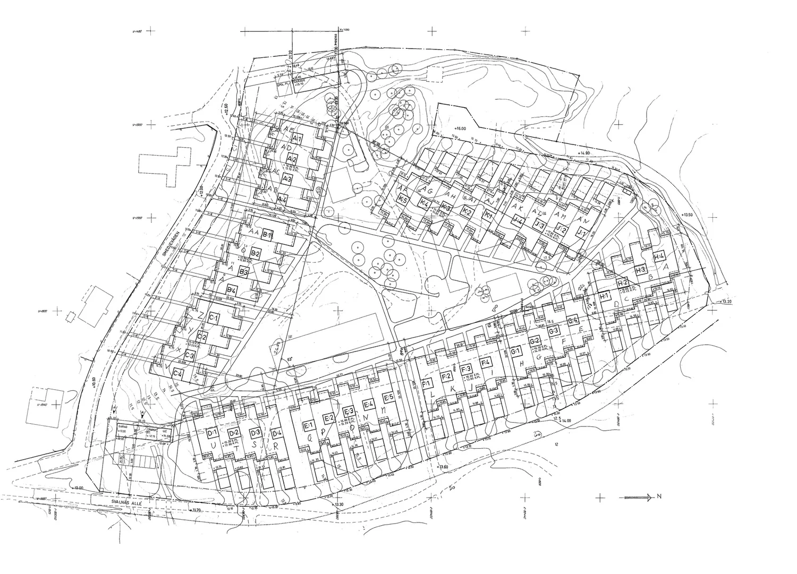
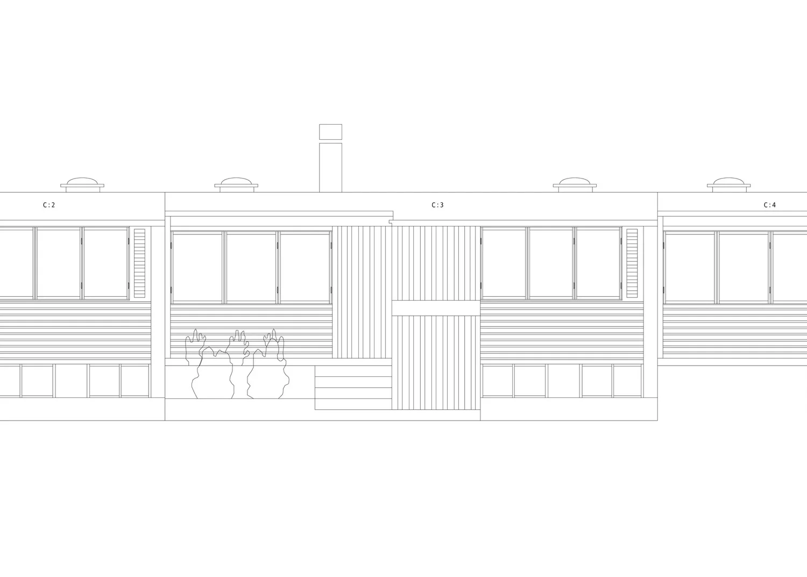
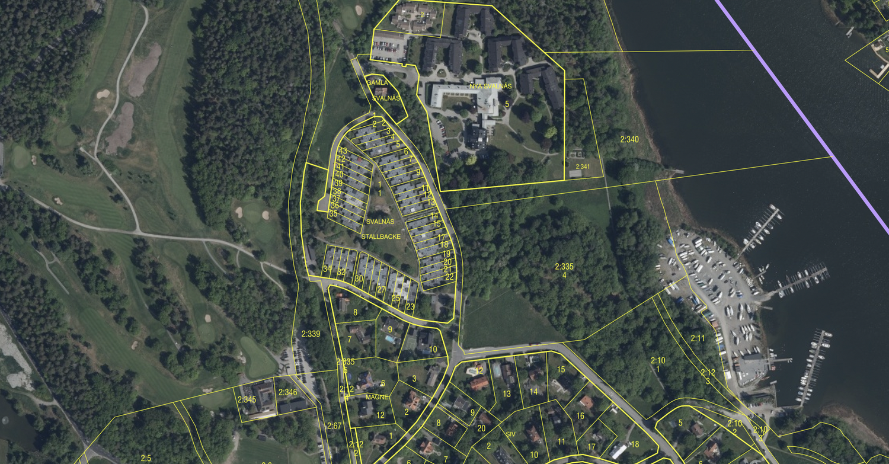
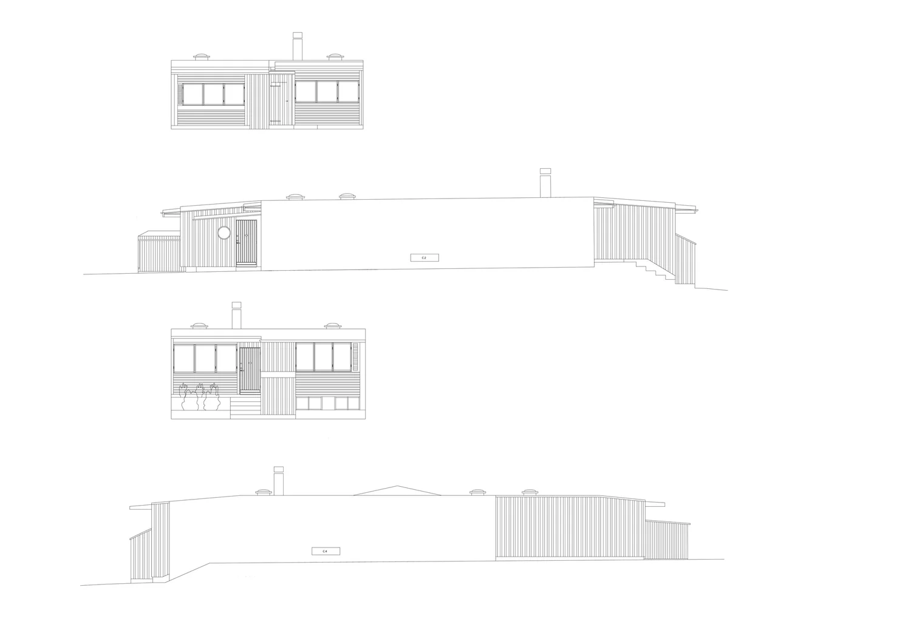
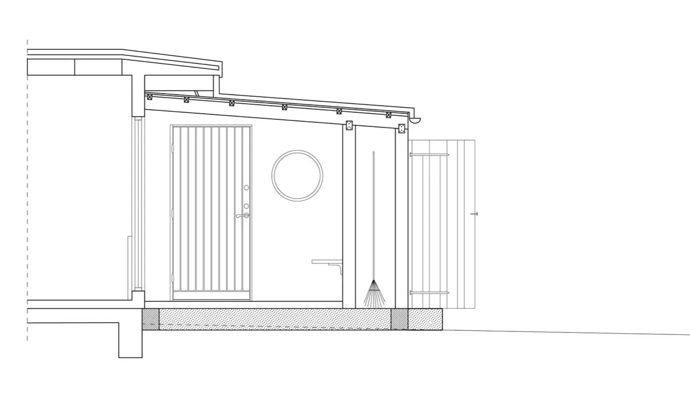

← tillbaka till index
Djursholm · Pågående
Tillbyggnad av entré till radhus med fokus på att ge framsidan en organiserad och enhetlig stämning i kombination med en ökad funktion och förbättrad förvaring.




